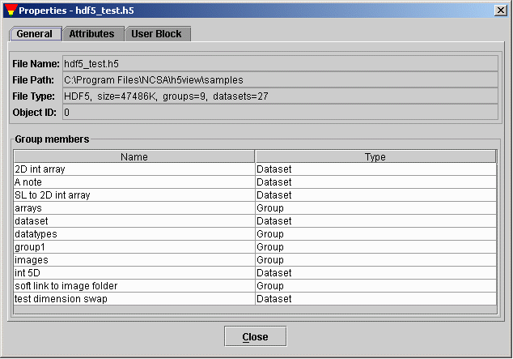

[Index] [1] [2] [3] [4] [5] [6] [7]
The Tree shows the objects in each open file, and supports navigation and editing of the objects. Muliple files can be viewed and edited, and both HDF4 and HDF5 files can be opened. The viewing and editing operations work for both HDF4 and HDF5, although some operations cannot be implemented for HDF4.
Every HDF5 object appears in at least one group. A set of objects can be stored together in a group. You can use the group object API functions to create and manipulate the groups. With the groups, you can organize the data objects in an HDF file. Objects in HDF4 may or may not belong to a group. An object that does not belong to any group is called lone object, such as lone Vdata. To map HDF4 structure to HDF5 structure, a "dummy" root group is created in the tree view and lone objects are put at the root group.
Since objects can have names in more than one group, the set of all objects in an HDF file is a directed graph. It is difficult to manipulate and browse the graph on a 2D virtual screen. Instead of showing the directed graph of the HDF file structure, HDFView displays HDF objects in an conventional structure of a tree of "folders"; breaking the "loops" in the graph when necessary. The tree viewer of HDFView provides users an easy way to browse and manage HDF data objects in an HDF file. The following icons are used to represent HDF objects:
Groups are presented as folders in the tree viewer. Opening and closing folders, you can browse the individual HDF objects in the HDF file. Datasets, images and tables are leaf objects in the tree. Clicking a leaf object, you see the content of the object displayed in the data/document window on the right of the HDFView. Figure 4.1 illustrates that an HDF4 file, annras.hdf, and an HDF5 file, hdf5_test.h5, are currently open by the HDFView.

The Tree Viewer
To select an object in the tree, point mouse on the object and click once on the object. You can open the data content of the selected data object from menu bar or the popup menu.
The popup menu appears by clicking the right mouse button on the object in the tree view. When a command is selected from the popup menu, the command action will be taken on the object clicked.

The Object Popup Menu
You can open a data object in the tree by a double-mouse-click or selecting open command from menu bar or popup menu. By default, data content is displayed as an image, a table or text based on its datatype. See the following chapters for a detailed discussion of the data viewers.
If the data value is not in memory, the "Open" action will load the data from file and display it. If the data is already loaded into memory, it will just display the data. If you want to refresh data in memory or open dataset with different selection (subset or display option), you have to use "Open As".
Using "Open As", you can select a subset of dataset to display or change the default display options. For example, you can display the data values of an image in spreadsheet, or show a scalar dataset as an image. For multi-dimension dataset, you can select any of two dimensions to display. The mouse-drag navigator allows you select a subset by dragging the mouse onver the preview image. For more details of how to select a subset and dimensions, read 5.2 Subset and Dimension Selection
The start determines the starting coordinate of the selected area.
The end determines the ending coordinate of the selected area.
The stride chooses array locations from the dataspace with each value in
the stride array determining how many elements to move in each dimension. Setting
a value in the stride array to 1 moves to each element in that dimension of the
dataspace; setting a value of 2 in a location in the stride array moves to every
other element in that dimension of the dataspace. In other words, the stride
determines the number of elements to move from the start location in each dimension.
Stride values of 0 are not allowed. If the stride parameter is NULL, a contiguous
hyperslab is selected (as if each value in the stride array was set to all 1's).

The Display Option
General metadata includes the name, type, path of the data object.
For groups, general metadata also includes the name, type, size of all the members of the group. The following figure shows an example of the general information of group.

General Properties of HDF group.
For a dataset (or image), the general metadata also includes the dataspace information (rank, current and maximum size of each dimensions), datatype information (type, size, order). The following figure shows an example of the metadata for a dataset.

General Properties of Dataset.
To see the attributes of an object, you click the "Attribute" tab at the Object Property Window. The name, type, size and value of all attributes of the slected object are displayed in a table. The following figure shows and example of the attribute display.

HDF Attributes

Create New File
Use "Save As" from the file menu to save the current selected file into a new file of the same format, i.e. HDF4 to HDF4 or HDF5 to HDF5. (HDFView does not support HDF4/5 conversion.)
For HDF5, a new file is written that does not contain the inaccessible objects and it packs the unusable space. Thus, the new file may be smaller than the original. Dataset or attributes values that are object references can not be updated. For HDF4, a new file is the exact copy, same file content and file size.

Create New Group
To create a new dataset, select the "New Dataset" command from the object menu. Then, specify the name, path, datatype, dataspace and storage layout and compression of the new dataset. The current version only supports creating simple datatypes. This version cannot create an HDF4 VData or an HDF5 compound dataset (these objects can be viewed). Supported datatypes include integers (byte, short, int, long), float, double, and character. For HDF5, it also include String and Object references.

Create New Dataset
The "New Image" command from the object menu allows you to create an empty image with default image attributes. The new image does not have any palette attached to it. You can create two kinds of images: indexed image with 256 colors and 24-bit true color image.

Create New Image
To delete objects from the tree, you first select the objects, then choose the "Delete" command from the Object menu. A confirmation dialog appears to make sure you want to delete the selected objects. Deleting an object from an HDF4 file is not supported. The deleting HDF5 object calls the H5Gunlink() function of the HDF5 library. The unlink function removes the link, and when an object has no remaining links it can be deleted. However, the HDF5 library does not currently reclaim the space in the file. This means that the size of the file does not shrink even though objects are removed. (Users are cautioned that repeatedly creating and deleting objects with H5View can cause the HDF5 file to grow.) To get rid of the inaccessable objects, you have to save the current file into a new file and rename the new file to the current file.
You can also select multiple objects in the tree and apply the copy/paste action into the selected objects. Selection can be contiguous and discontinguous. To make a continguous selection, hold down the Shift key and click on the fisrt object, then click on the second object while holding down the Shift key. All the objects between the two objects will be selected inclusively. To make a discontinguous selection, hold down both the Ctrl key and click on the objects with the left mouse button. The objects being clicked will be selected. The rest of the operation of copying/pasting multiple objects is the same as that of copying/pasting single object.
Copying a group will also copy all the decendents of the group. Copying a root group is not allowed.

Create New Attribute
To change the value of an attribute, type in the new value into the cell. Only string and scalar attributes can be modified. The new value must be interpretable as a value of the correct type for the attribute. For a string value, the value typed will be truncated to the size of the attribute if it is longer than the declared size of the attribute. A valid data value must follow the rules specified by the section 5.4 Change Data Value
To delete an attribute, you select the attribute and click the "Delete" button. Deleting an attribute of an HDF4 object is not supported.